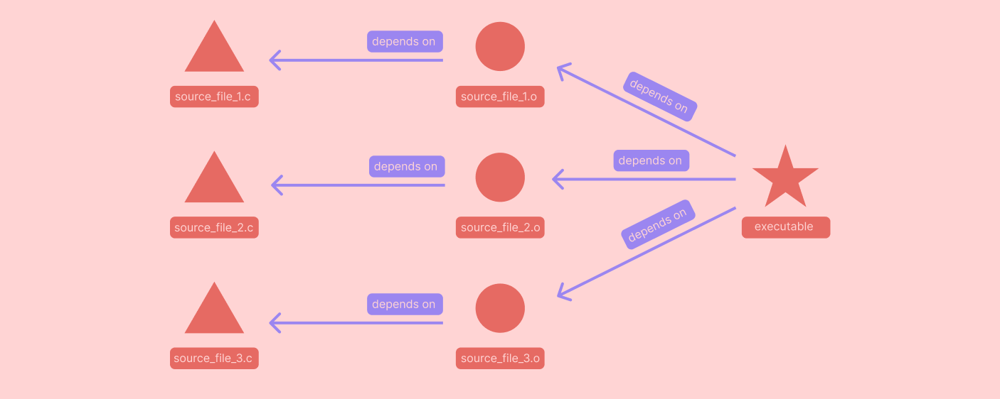

My GNU Make Study Guide
Table of contents
I have a love-hate relationship with make.
On one hand, it is one of my favorite tools. It is installed almost everywhere. For simple projects it is easy to setup, and when configured well, it is easy to run and extend. On the other hand, writing makefiles for anything other than trivial builds can be tough. The language and syntax of makefiles has many sharp edges buried in the details. Every time I want to write a non-trivial makefile, I have to reacquaint myself with a grab bag of make specific stuff to get going again.
I created this study guide in an attempt to really solidify my understanding of the core features you can use in makefiles. To make this study guide, I did two things:
- I read a few papers that generally describe build systems. I then tried to describe
makeframed in the terms of those papers. That is what is covered in the Make as a Build System section. - I read through almost every section of the official make documentation and tried to note down the features of the tool and the language that’d I’d come across or used before. I then tried to explain each of those features in my own words in a section of this document.
Disclaimer: This post is more of a collection of notes than a cohesive piece of writing. I have not taken the time to massage this into writing that flows, and frankly, this is neither the topic nor the post that I want to make that investment in. I am publishing this in spite of its rough condition because it might still have some value for others and because not everything needs to be perfect 💎
Make as a Build System #
🏭 Make is a Build Automation System (a.k.a. a Build System). #
- To get oriented with make, it is useful to nail down some terms that we’ll use to talk about this kind of software.
- build system: a program or set of programs that automate your build process.
- build process: the sequence of all build tasks required to generate the correct output artifacts from your input source files.
- build task: the smallest unit of work in your build process; these tasks cannot be broken down into smaller tasks. Build tasks may call one or many build tools.
- build tools: programs that accept source files as input and generate output files or initiate some side effect based on your input source files.
- A build: is a single execution of your build process.
- Some examples of these terms in action:
- In a C project where you have many source files that are used to create a single executable.
- Your build process is all of the steps you need to take to compile the source files and link object files into an executable. If you have test suite, your build process would also include the steps you need to build those tests.
- This project would have many build tasks like compiling each
.cfile to.ofile and linking the.ofiles together into an executable. - This project would also have build tools like a compiler and linker.
- A build of this project would be the creation of the output executable from all the source files using the compiler and the linker.
- In a React project where you are writing JSX code that will be converted into vanilla js to be run on the browser
- Your build process would be all the steps you need to take to convert your source
jsxfiles into a set of vanilla javascript files that can be hosted on a webserver. - Your build tasks include running your
jsxfiles through a transpiler likebabelto create vanilla js and likely a step of running those files through a bundler likewebpackto turn them into a neat minified js file that can be served to clients. - Your build tools would be those executables like
webpackandbabel. - A build of your project would be the creation of the assets that will be hosted on your webserver.
- Your build process would be all the steps you need to take to convert your source
- In a C project where you have many source files that are used to create a single executable.
- References:
- A Model and Framework for Reliable Build Systems: Provides a thorough model that allows us to define what a build system is and how one works. The terms and definitions I use to describe build systems and their component parts come from this paper.
🕰️ Build Systems use Dependency Graphs to Build Your Project #
- What is it that separates the bone fide build systems from a plain old scripts? If the purpose of a build system is to automate the build process of a project… we could just automate with a simple shell script right?
- Yes, you definitely could! And that would be a build system in its own right, but most build system programs are able to plan and execute a build of your project faster than a naive script by using information about the structure of your project.
- Many build system programs create an internal representation of your project’s build dependency graph and use it to execute builds in an efficient way.
- The build dependency graph is a directed acyclic graph (D.A.G.) that specifies the inputs and outputs of each build task in your project (see the image below).
- The build system can then use that graph to figure out the correct sequence of build tasks needed to create some artifact.

- Build systems have different mechanisms for deriving your project’s build dependency graph.
- Some build systems, like make, require the programmer to elaborate and specify the project’s build dependency graph.
- Others automatically derive the build dependency graph of your project based on the contents of your source files.
- Build systems use this dependency graph to implement two features that can make your builds run faster: Incremental Builds and Parallel Builds.
- In an incremental build, results from previous builds are used in the current build.
- Effectively, intermediate build results are cached for use in future builds.
- The build system you use is responsible for figuring out which cached build artifacts are stale and need to be reconstructed for the current build.
- Make is an incremental build system by default.
- In a parallel build, multiple build tasks of the build process are run at the same time.
- Builds typically involve many steps, many of which are independent from each other and can be run concurrently.
- The build system you use is responsible for identifying which build tasks are appropriate to run in parallel.
- Make can be configured to run build tasks in parallel.
- In an incremental build, results from previous builds are used in the current build.
- References:
- A Model and Framework for Reliable Build Systems: Provides a specific model of how build systems use dependency graphs and how build systems evaluate whether or not nodes in that graph are out of date.
- Forward Build Systems, Formally: Describes a build system that can derive a project’s build dependency graph from the source of the project.
🧑⚖️ Dependency Graphs are Encoded in Rules of Makefiles #
- Make requires that a user specify the dependency graph for their project in a
Makefile - The programmer configuring the build system writes a
Makefilethat stores a sequence rules. - Each of these rules encodes one of the dependencies in your build process.
- Makefiles are an example of declarative code; they specify all of the dependencies in your project and how to build each dependency rather than specifying how to execute the build step by step (like you would in an imperative language).
- Each rule has a target, zero or many prerequisites, and a recipe.
- The target can target is file that the rule creates when it is run.
- The prerequisites are the files that the target depends on.
- The recipe is the set of instructions for creating the target.
- The syntax for a rule is as follows:
target: prerequisite1 prerequisite2 ...
recipe-line-1
recipe-line-2
...
- Simple rules describe a single node in the build dependency graph. More general rules can be written to describe many different parts of the dependency graph.
- Makefiles also support a number of other programming constructs like variables, functions, pattern matching, and shell globbing, but it is useful to remember that these constructs only exist to help you write better rules.
- To run make, you specify the target (or targets) you would like make to build, and make will consult the rules in your
Makefileto determine which recipes to run. - References:
- Make documentation — Chapter 2: An Introduction to Makefiles
Simple Make Syntax #
📜 Simple Rules #
- Rules are really the core of of what makes make. The way make builds your project is entirely determined by the rules you write.
- There are many ways to write complex rules, but rules follow the same basic syntax that is exemplified by simple rules.
- A simple rule specifies a file to build as its target and has one or many files as prerequisites.
target: prerequisite1 prerequisite2 ...
recipe-line-1
recipe-line-2
...
- Make determines that the target needs to be built by consulting the file system for information about the target and the prerequisites.
- If the target file does not exist, the target must be built.
- If any of the prerequisites do not exist, the target must be built.
- When the last update timestamp of any one of the prerequisites is newer than the last update timestamp of the target, the target must be rebuilt.
- The recipe for a rule is a sequence of shell script lines of code.
- If the target is a file in the file system, then those shell script lines should create the target file using the prerequisite files.
- An example of a few simple rules that compile C files and link the outputs to make an executable.
main: main.o helper.o
ld -o main main.o helper.o
main.o: main.c helper.h
gcc -c -o main.o main.c
helper.o: helper.c
gcc -c -o helper.o helper.c
- Example running
makeagainst file
# Print out the directory contents before running make
> tree ./
./
├── Makefile
├── helper.c
├── helper.h
└── main.c
# Build main target
> make main
gcc -c -o main.o main.c
gcc -c -o helper.o helper.c
ld -o main main.o helper.o
# Try to build the main target again, but nothing happens
# because everything is up to date
> make main
make: `main' is up to date.
# Print the directory content again so we can see the files
# make generated.
> tree ./
./
├── Makefile
├── helper.c
├── helper.h
├── helper.o
├── main
├── main.c
└── main.o
- References:
- Make documentation — Chapter 2: An Introduction to Makefiles
✏️ Simple Variable Assignment #
- Make supports an entire little programming language, and what would a programming language be without variables.
- The basic syntax for variable assignments in make is as follows:
variable_name=variable_value
# Whitespace before and after '=' is ignored, so this is equivalent
variable_name = variable_value
# As is this
variable_name = variable_value
- Variable names can be any sequence of characters not containing the following characters:
:,#,=, or whitespace.- However, variable names with upper and lower case letters, numbers, and underscores are recommended.
- All variables in make have values that are strings. There are no other datatypes for variables.
- The beginning of the string value starts after the
=character and any whitespace that follows it.
- The beginning of the string value starts after the
- Some variable assignment examples:
# `name` gets the string value "beau carlborg"
name = beau carlborg
# `location` gets the value "oakland" (leading whitespace is ignored)
location = oakland
# `occupation` gets the string value "software engineer" (internal whitespace preserved)
occupation = software engineer
# `age` gets string value "42" (notice it is a string, not a number)
age = 42
# Common practice is to not use spaces around the `=` in an assignment
CC=gcc
- References:
- Make documentation — Chapter 6.1: Basics of Variable Definitions
📖 Basic Variable Reference:
- The variables you declare can be used in any part of a makefile. The definitions of other rules, targets, prerequisites, recipes, you name it.
- The syntax for referencing a variable is as follows:
$(variable_name)
# or alternatively
${variable_name}
# Or, for single character variable names only
$v
- ⚠️ The single character variable reference is a common source of bugs for those new to writing
makefiles.
# This may look like a valid variable reference for the variable `foo`
$foo
# But, in fact, make treats this reference as if it were
$(f)oo
- Variable names can be referenced in targets, prerequisites, or recipes.
TARGET_NAME=main
PREREQUISITE_NAMES=main.o helper.h helper.o
LINKER=ld
$(TARGET_NAME): $(PREREQUISITE_NAMES)
$(LINKER) -o $(TARGET_NAME) $(PREREQUISITE_NAMES)
- References:
- Make documentation — Chapter 6: How to Use Variables
🤖 Basic Automatic Variables #
- All of our rules have been static so far, meaning that the target file and all of the prerequisite files are explicitly listed.
- Later on, we will introduce syntax that allows for rules where the targets and prerequisites are determined when
makeis run. - For those kinds of rules, we need a mechanism to reference the target and prerequisite names that make derived for us in our recipes.
- Make provides automatic variables to help with this.
- Later on, we will introduce syntax that allows for rules where the targets and prerequisites are determined when
- Within every recipe, make assigns the following Automatic Variables for you based on the targets and prerequisites in your rule. These variable references will likely have different values in every rule’s recipe.
$@: the name of the target file that caused the rule to be run.$^: the names of all prerequisites (separated by a space—even if they were separated by other whitespace in the rule declaration).$<: the name of the first prerequisite.$?: the names of all prerequisites that are newer than the target.- And more! But these are the basics and the ones you see most commonly.
- Examples:
main: main.o helper.o
ld -o $@ $^
main.o: main.c helper.h
gcc -c -o $@ $<
helper.o: helper.c
gcc -c -o $@ $^
- References:
- Make documentation — Chapter 10.5: Automatic Variables
🎰 Basic Function Invocation #
- Make provides a set of functions that can modify text values. Functions can be invoked anywhere that a variable can be referenced.
- The basic function invocation syntax is as follows:
$(function_name argument1,argument2,argument3)
${function_name argument1,argument2,argument3}
- In a function call, the function name and the arguments are separated by one or many whitespace characters and the function arguments are separated by commas.
- ⚠️ This syntax makes passing (1) leading whitespace in your first argument (2) a comma in any of your arguments (3) an unmatched parenthesis in your arguments rather difficult.
- The make documentation gives two basic solutions to this problem, but they are far from pretty.
- References:
- Make documentation — Chapter 8.1: Function Call Syntax
💹 Common Functions #
- Some of the more common and generally illustrative basic functions
$(wildcard pattern): Thewildcardfunction will match a pattern against your current working directory, and expand into a list of the files that match the wildcard pattern.- Pattern will use
*,?, and[...]characters for matching—just like the Bourne shell. - ⚠️
Wildcardis matched against your working directory! Not theMakefile’s directory. Most of the time, you are invokingmakefrom the directory that theMakefileis in, but if not, you may not get the results you expect.
- Pattern will use
# If your current directory has these files
# ./
# ├── Makefile
# ├── test1.txt
# ├── test2.txt
# ├── test3.txt
# └── testA.txt
# `VAR1` would get value "test1.txt test2.txt test3.txt testA.txt"
VAR1=$(wildcard *.txt)
# `VAR2` would get value "test1.txt test3.txt"
VAR2=$(wildcard test[13].txt)
# `VAR3` would get value "test1.txt test2.txt test3.txt testA.txt"
VAR3=$(wildcard test?.txt)
$(shell shellscript_command): Theshellfunction will perform command expansion of a shell command in theMakefile, meaning the function will evaluate to the text that executing the shell command sends to stdout.
# `contents` will equal the data in the file `foo`
contents=$(shell cat foo)
$(subst from,to,text): Replaces every occurrence of the text in argumentfromwith the text in argumenttoin the text in argumenttext.
# `VAR1` would get value "hola world"
VAR1=$(subst hello,hola,hello world)
# `VAR2` would get value "CompA.tsx CompB.tsx CompC.tsx"
VAR2=$(subst .jsx,.tsx,CompA.jsx CompB.jsx CompC.jsx)
$(patsubst pattern,replacement,text):patsubstis very similar tosubst, but it allows for including a%wildcard character in thepatternargument that can be used in thereplacementargument.
# `VAR1` would get value "new_test1.txt new_test2.txt test3.pdf"
VAR1=$(patsubst %.txt,new_%.txt,test1.txt test2.txt test3.pdf)
$(dir names…): Get the directory part of multiple paths.
# `VAR1` would get value "foo/ foo/bar/ ./"
VAR1=$(dir foo/ foo/bar/baz.txt ./blamo)
$(notdir names…): Get the filename part of multiple paths.
# `VAR1` would get value "text baz.txt blamo"
VAR1=$(notdir foo/text foo/bar/baz.txt blamo)
- References:
Syntax for More General Rules #
🤡 Phony Targets #
- So far, in each of our rules, our target has been a file that the recipe of the rule creates. Sometimes it is useful to create a rule whose target does not correspond to any file.
- When a target does not correspond to a file, we call it a phony target.
- These can be useful in a number of situations:
- They allow you to run build tasks whose utility is that their recipe performs some useful side effect.
- They allow you to create a rule which runs many other rules.
- Some examples of common phony targets:
# `all` is a common phony target that typically has all of the major
# artifacts of a project as its dependencies
all: executable test-bench documentation
# `clean` is a common phony target whose recipe will remove all
# intermediate files created by other build rules
clean:
rm -rf ./bin/*
# In previous projects that involved uploading binaries to external
# devices like FPGAs or EEPROMs, I've used an `upload` phony target.
upload: executable
loadFileToExternalDevice --device=fpga executable
- ⚠️ If a file is created in the same directory as the
Makefilewith a name of a phony target, it is possible for your phony targets to stop executing (because a file with that target name exists and is up to date).- Make provides a directive that can be used to explicitly mark a target as phony, telling make not to consult the file system for a file with that name.
.PHONY: clean
clean:
rm -rf ./bin/*
- References:
- Make documentation — 4.6 Phony Targets
🎨 Wildcard Rules #
- Often times, you want to create a rule that applies to every target or prerequisite matching some pattern in a directory.
- You can do this in make using wildcard characters in the target or prerequisite section of a rule.
# Using a wildcard rule to make a list of prerequisites that includes
# each chapter text file in the current directory
book.txt: chapter*.txt
cat $^ > $@
- References:
- Make documentation — 4.4 Using Wildcard Characters in File Names
🏵️ Pattern Rules #
- Similar to wildcard rules, pattern rules allow you to write rules that are more general than basic rules.
- Pattern rules allow you to create a rule for any target matching a particular pattern. That pattern can also be referenced in the prerequisite list of the rule.
- This connection between target and prerequisite using the pattern match is a powerful way to create dependencies that are named based on the target itself.
- Like with wildcard rules, automatic variables are essential so that you can reference the specific target and prerequisites for which the rule is being executed in the recipe.
# This pattern rule tells make that the dependency for any file ending
# in `.o` is a file with the same base name ending in `.c`
%.o: %.c
gcc -c -o $@ $^
- References:
- Make documentation — 10.5 Pattern Rules
🫥 Built-in Rules #
- By default, make also references a number of built-in rules beyond those you define in your
Makefilewhen you invoke it. - There are two built-in rules that you may still come across or shoot yourself in the foot with.
- A rule for compiling
.ofiles from.cfiles. According to the make documentation, “n.o is made automatically from n.c with a recipe of the form$(CC) $(CPPFLAGS) $(CFLAGS) -c”. - A rule for compiling executables from their corresponding
.ofiles. According to the make documentation: “n is made automatically from n.o by running the C compiler to link the program. The precise recipe used is$(CC) $(LDFLAGS) _n_.o $(LOADLIBES) $(LDLIBS)”. - These default rules can be disabled by passing either the
-ror--no-builtin-rulesflag whenmakeis invoked. - References:
- Make documentation — 10.2 Catalogue of Implicit Rules
👬 Multiple Targets per Rule #
- In all of the rules up to this point, we have only had one target per rule. Make also has affordances for specifying multiple targets for a single rule.
- There are two different variants of multiple target rules.
- Independent multi-target rules are equivalent to writing the same rule once for each target.
- These are simply a nice syntax affordance for condensing multiple rules that have the same dependencies and recipe.
- When the recipe is run,
$@will be set to one of the targets.
output1 output2 output3: prereq1 prereq2
compile -o $@ $^
# The above rule is equivalent to these three rules
output1: prereq1 prereq2
compile -o $@ $^
output2: prereq1 prereq2
compile -o $@ $^
output3: prereq1 prereq2
compile -o $@ $^
- Rules with multiple targets can also be grouped target rules.
- The
&:separator between targets and prerequisites indicates that the targets should be treated as grouped targets. - These rules are useful when you have one rule that updates multiple targets at the same time.
- If any one of the group targets is out of date, then the rule will be run again.
$@will be set to the name of the particular target that triggered the rule to execute.
- The
foo bar biz &: baz boz
echo $^ > foo
echo $^ > bar
echo $^ > biz
🦏 Order-only Prerequisites #
- The default interpretation of prerequisites in rules is that make should run the recipe whenever any one of the prerequisites has an update timestamp that is newer than that of the target.
- Order-only prerequisites allow you to specify prerequisites for a target that should only cause an execution of the recipe if the order-only prerequisite doesn’t exist. Once the order-only prerequisite exists, any subsequent updates to it will not cause make to execute the rule again.
- Order-only prerequisites are separated from normal prerequisites with a
|character.
# The `bin/` directory is an order-only prerequisite here. As long as it
# exists, no updates to it will cause the rule to re-run
executable: main.o | bin/
ld -o executable main.o
main.o: main.c
gcc -c -o main.o main.c
bin/:
mkdir bin
- References:
- Make documentation — 4.3.2.2 Order-only Prerequisites
Other Useful Syntax #
🧞 Variable Substitution References #
- Oftentimes in a makefile, you want to create one variable from another with a slight modification. You want to map over the values in one variable and generate your new one by performing some slight translation on the original variable.
- Variable substitution references are a lightweight piece of syntax has some basic functionality for doing this.
- The basic syntax of a variable subtitution reference allows you to replace the tail of every value in a variable with a new tail:
VAR_A:=foo.c bar.c baz.c
# VAR_B receives value foo.o bar.o baz.o
VAR_B:=$(A:.c=.o)
- Substitution references also support the pattern syntax that you can use in a
patsubstfunction call. This allows you to perform slightly more complex substitutions.
VAR_A:=foo.c bar.c baz.c
# VAR_B receives value foo_new.c bar_new.c baz_new.c
VAR_B:=$(A:%.c=%_new.c)
# This code using the patsubst function is equivalent
VAR_B:=$(patsubst %.c,%_new.c,$(VAR_A))
references:
- Make documentation — 6.3.1 Substitution References
👨🍳 Make Syntax for Recipes #
- Make executes each line of code in the recipe in its own subshell. However, it does do some processing on the recipe lines first.
- Breaking up recipe lines
- Lines in a recipe can get long; if you want to break the line up with a newline in the
Makefile, but still have it executed by make as one shell line, a\character can be placed at the end of the line.
- Lines in a recipe can get long; if you want to break the line up with a newline in the
- Suppressing recipe echoing
- By default, when make executes a recipe, it echoes every line of shell it executes to the terminal. This behavior is called recipe echoing.
- If a line in a recipe begins with the
@character, then recipe echoing of that line will be suppressed.
# In this example, when the rule is run, the echo command will be
# executed, causing "building the book!" to be echoed, but make will
# not print `echo "building the book!"` to stdout
book.txt: chapter*.txt
@echo "building the book!"
cat $^ > $@
- Ignoring errors in recipe lines
- By default, make executes recipe lines one after another. If one of the recipe lines exits with a non-zero status code, then make will abort execution of the rest of the rule.
- If you want to prevent aborting on errors for a particular shell line, prefix the line with
-. This will tell make to continue to the next line of the recipe even if this line errors out.
- Escaping
$character in make recipes- By default, make will read any
$character in a recipe as beginning a reference to a make variable. - If you want to escape the
$character and have make pass it on to the shell command, you can add a second$character in front of the$.
- By default, make will read any
- References:
🧟♂️ Different Types of Variable Assignment #
- By default, variables in
makefilesdo not store the evaluated right-hand side value from the variable declaration. Instead, they store the right-hand side value as it was specified, and then evaluate that when the variable is referenced. - These variables are referred to as recursively expanded variables.
random=$(shell echo $$RANDOM)
all:
@echo $(random)
@echo $(random)
# Running `make all` against this `Makefile` will output two different
# random numbers because make executes the function from the declaration
# every time the variable is referenced.
- The other type of variable assignment is known as simply expanded variables. These variables’ right-hand sides are evaluated at declaration time, and that evaluated value is stored in the variable.
random:=$(shell echo $$RANDOM)
all:
@echo $(random)
@echo $(random)
# Running `make all` against this `Makefile` will output the same number twice
# because make executes the function during the declaration and assigns the
# output to the variable.
- References:
- Make documentation — 6.2 The Two Flavors of Variables
Other Bits and Bops #
🛶 Make Executes Each Recipe Line in its Own Subshell #
- When make executes a recipe, it executes each line of the recipe in its own subshell.
- ⚠️ This means that setting shell variables or changing directory in a
Makefilerecipe will not affect following lines.- This can be confusing to new
Makefileauthors who expect the entire recipe is executed like a shell script.
- This can be confusing to new
target1: prereq1
cd subdir
pwd # pwd will not be subdir/ when pwd evaluates, because
# the previous line was executed in a separate shell instance
- References:
- Make documentation — 5.1 Recipe Execution
🏚️ Creating a Prerequisite That Is Always Out of Date #
- Sometimes it is useful to have a prerequisite on a rule that is always out of date. This will ensure that the rule is always run even when the target is up to date.
- This can be useful when debugging to see what happens when a rule is run.
- This can also be useful if you have a rule that updates a file every time the recipe is run
- This can be done by creating a dependency that is always out of date and adding it as a prerequisite on any rules you always want run.
- Another alternative is to mark your target file as
.PHONY. But that is confusing because phony targets usually don’t have an associated file and it is not going to work if your target is a pattern target (you can’t mark a pattern as phony).
- Another alternative is to mark your target file as
# The `FORCE` target has no dependencies and no rule,
# and thus can never be created and will always be out of date
FORCE:
# Every time make has `log.txt` as a goal or a prerequisite of another
# rule, it will consider `log.txt` out of date.
log.txt: FORCE
echo "MAKE BLAMO" > foobar.txt
# This is the same as the above, but using a pattern rule instead.
%.txt: FORCE
echo "MAKE BLAMO" > foobar.txt
- References:
- Make documentation — 4.7.3 Force Targets
👩👩👧👦 Using Multiple Makefiles #
- Once a project grows sufficiently large, having all of your build process logic included in one
Makefileis too unwieldy. - Make has a few affordances for using multiple
makefilesin a project, and include mechanism for importing the rules from one makefile and a mechanism for executing other makefiles. - Including
makefiles:- It is possible to include the rules from another
makefilein your project by using theincludedirective. - Conceptually, you can imagine that calling the
includedirective expands all of the content of the includedmakefilesdirectly into yourMakefilewhere theincludedirective is. - This can be useful if your project has shared variables that every
makefileshould use, or if yourmakefileincludes a lot of boilerplate. - Some tools will process your source files and extract the appropriate make rules from them. The include mechanism allows you to incorporated those generated make rules into your build process dynamically.
- The syntax for including other makefiles in your current makefile is as follows:
- It is possible to include the rules from another
include some_makefile.mk some_other_makefile.mk
-
Recursively calling
makefiles- You can invoke
makein a recipe in your currentmakefileby calling$(MAKE). - Invoking this command is the same as calling
makeon the command line. - This is a useful pattern when you want to have makefiles in subdirectories of your project that are responsible for executing the build of those files.
- Many projects have one simple
Makefileat the top level of their project directory. This makefile is responsible for recursively executing make in those subdirectories. - That kind of setup might look like this:
- You can invoke
executable:
cd src/ && $(make)
tests:
cd tests && $(make)
docs:
cd documentation && $(make)
- By default, when you invoke
makerecursively in this way, no information from your currentMakefileis communicated to the recursively runMakefile. - It is possible to share variables from the calling
Makefileto the recursive calleeMakefileby using theexportdirective
my_exported_var:=foobar
export my_exported_var
subsystem:
cd subdir && $(MAKE)
# Now when `make` is executed in `subdir`, the variable `my_exported_var` will
# be defined during the execution of the `subdir` `Makefile`
- References: